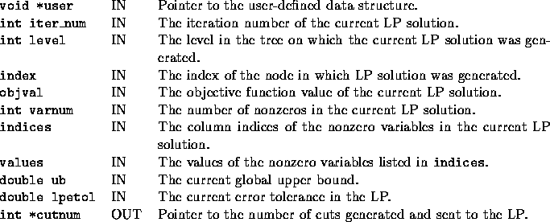

int user_find_cuts(void *user, int varnum, int iter_num, int level, int index, double objval, int *indices, double *values, double ub, double lpetol, int *cutnum);
The user can generate cuts based on the current LP solution stored in
soln. Cuts found need to be sent back to the LP by calling the
cg_send_cut(cut_data *new_cut) function.
The argument of this function is a pointer to the cut to be sent. See
Section
2.2 for a description of this data structure. If the
user wants the cut to be added to the cut pool in case it proves to be
effective in the LP, then new_cut->name should be set to
CUT__SEND_TO_CP. Otherwise, it should be set to
CUT__DO_NOT_SEND_TO_CP.
The only output of this function is the number of cuts generated and this
value is returned in the last argument.


%